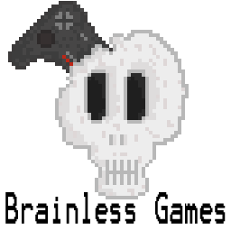

Documentation For:
The Dead of Night
All work copyright 2015 Brainless Games
Written by Daniel Taylor (B00240424)
Version #1.0
Friday, October 9th, 2015
Research into Game
I originally wanted to create a First Person Shooter genre of game for the project, since however we were not able to use any other framework I decided to go with a top down shooter style of game. My reason for going with this genre is that it is similar to my original game and I have played other web based top down shooters that I really enjoyed. To mix up the gameplay from the general top down shooters, I decided to cross the gameplay with some gameplay features from both Call of Duty Zombies and Killing Floor. Once I knew about the genre of game I wanted to make and I had thought more about the features from Call of Duty Zombies and Killing Floor that I wanted to implement I created a small description of the game. After writing this description I asked some friends who fit into my target audience what they though. After getting some feedback I seen this was an idea that people liked so decided to go with it. I will be taking Call of Duty Zombies weapon feature where you can buy guns or ammo at any point in the round; I feel this is better than randomly spawning in weapons or ammo whenever a player kills a zombie as it gives them more choice and verity. The upgrade system I will be implementing is inspired by a class upgrade system featured in the Killing Floor series. The difference being the Killing Floor upgrades differ between the classes in the game were as my game will be using a more generalised system.
Story
You find yourself waking up on a cold, damp, hard floor, with your head pounding as if you were running
through incoming enemy artillery. That however would be too plausible, but all you can see is a group of
red dots getting closer and closer and the sound of painful growls getting louder by the second.
Seconds later you see… soldiers… but they weren’t really soldiers anymore.
One of them charges into you and you put him down with a double tap from your pistol. Still unsure what is
really going on your only instinct now is to survive by any means necessary until you have some time
to figure out what is happening around here.
Genre
The games genre will be a 2D top down shooter style of game crossed with a wave based survival game genre seen in such titles as Call of Duty Zombies and Killing Floor 1 & 2.
Player Goals
The object for the game is for the player to continually kill zombies in order to gain money and get the most points to set their high score, if at any time the player runs out of ammo they will need to buy a new weapon or more ammo placed around the level. The player will also need to decided what weapons they buy as well as how cautious they are in making every shot count in order to save as much money as possible to buy more and more upgrades.
Intended Experience
Before the first zombie of each wave even gets in the level I want the players to be on edge and feel extremely tense as they don’t know what is coming or even when it is coming. During an attack from the zombies they player should feel like they keep coming and will not stop no matter what, overall the game itself should feel difficult and challenging. The player will need to constantly think about what they are doing and what the plan to do in order to not get surrounded or have their back up against a wall.
Target Audience
The audience the game will be targeted towards will be both males and females from the age of 15 and over that have or had an interest in top down shooter and wave based survival games.
Intended Gameplay
Table 3 shows the controls the player will be able to use during gameplay.| Player Action | Controls |
| Movement | W, A, S & D keys |
| Rotate and aim player | Mouse |
| Fire weapons | Left mouse button |
| Purchase weapons | E key |
Table 3: Player Input
During the game the player and zombies will be able to collide with each other and static level objects such as walls, of the player collides with a zombie however they will lose health. The player will also be able to kill the zombies by shooting them, each time the player does kills a zombie they will earn some money and points which will display their top score. The money they earn will be used to but new guns/ammo which will be placed around the level. Once the player has been killed they will then be able to purchase upgrades to their ammo count, damage and more health, these upgrades will also be saved to the users account.
Development Method
The development method I have decided to adopt for the project is the Agile method. I have decided to use this method compared to other methods such as the Waterfall method, this is due to the fact the Agile method focuses less on the projects documentation and building the entire project at once but rather develop the project incrementally. Another benefit of using the Agile method over the Waterfall method is that the Agile method welcomes changes late into the development cycle; this can prove to be extremely beneficial due to the short development time available for the project. “At its core, agile is about being efficient, focusing on delivering quality in the work products, and being adaptive to change.”[1]

Fig 1: Forsyth, A. (2013) Agile development method cycle [Online] http://www.myglobalit.com/blog/waterfall-vs-agile-models-software-development [Accessed: 08/10/2015]
Table 2 shows the pros and cons between the Agile and Waterfall development methods.
| Agile Method | Waterfall Method | ||
| Pro | Con | Pro | Con |
| Welcomes Changes. | Unclear instructions could hurt project. | Easy to follow and manage. | Changes are hard to implement late into development. |
| Does not require large documentation. | Benefits small projects. | No Software until late stages of development. | |
| Software is being constantly developed. | Steps do not overlap. | High risk. | |
| Benefits small projects. | |||
| Shows attention to both good design and technical implementation. |
Table 2: Agile development methodology vs Waterfall development methodology
Risk Analysis
Table 1 shows the risk analysis taken for the games development stage to ensure any problems that may arises are assessed early.
Key :( very low=1, low=2, medium=3, high=4, very high=5)
Estimated Probability (1-5)
Estimated impact (1-5)
| Risk | Score | Recognition | Resolution |
| Too much or too little money from killing the zombies. | Estimated Probability (2) Estimated impact (5) |
Will make the game too easy or hard to buy weapons or upgrades. | Testing will need to be carried out to ensure the amount of money gained is balanced. |
| Zombies moving too fast or slow. | Estimated Probability (1) Estimated impact (5) |
Making zombies too fast or slow will make the game too hard or easy and put players off. | Testing will be required from players of various game skills to ensure movement speed is balanced. |
| Upgrades cost too little. | Estimated Probability (3) Estimated impact (4) |
Making the players upgrades too easy to acquire will make the game boring. | With the design of the game being purposefully difficult, the cost of the upgrades will need to reflect this design decision. |
| Not enough weapon verity. | Estimated Probability (1) Estimated impact (3) |
Not having enough types of weapons could leave the game boring and bland. | I will need to ensure the game focuses on a verity of weapons instead of just a large number of the one type. |
Table 1: Risk analysis for game development